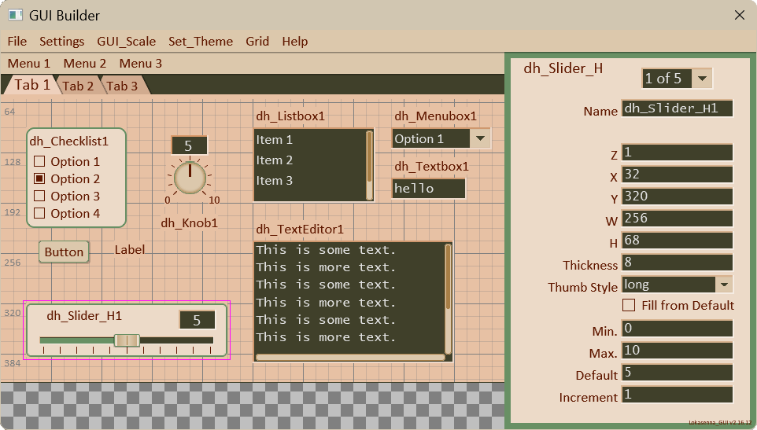
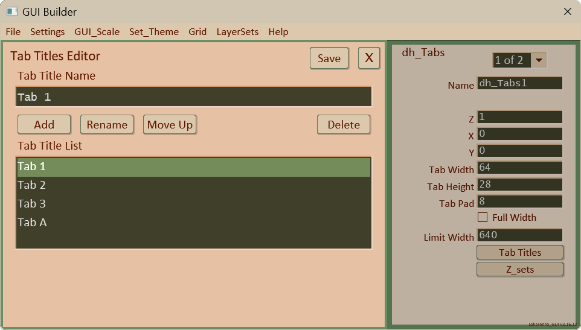
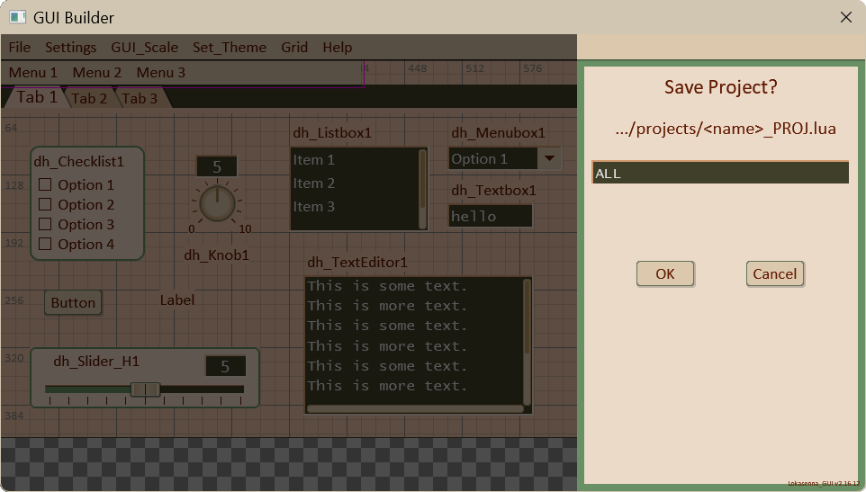

4.00 dh_GUI_Builder:
dh_GUI_Builder (showing Desert theme)

dh_GUI_Builder
is used to build GUI's for scripts that utilize the
Lokasenna GUI and dh_Toolkit. It consists of a
workspace, a properties sidebar, and the top menubar.
Layouts can be saved and reloaded. They can also be imported
into a script.
GUI Builder exposes almost all of an element's colors.
While that allows them to be set individually, it is best
to use the default color settings otherwise it
breaks theming. Notable exceptions are panel colors of which
the background is generally set to use either the window background
or panel background color, along with their associated text colors.
Also, an element's backdrop color also needs to correspond to the
background color of where the element is placed. See section
"3.04 Colors Tab" for more about colors.
GUI Builder uses layers 490-499 for its GUI. Do NOT place
any elements on these layers. GUI Builder also uses layers
1-10 for its GUI. However, it is okay to place elements on
these layers as they shifted internally. For example: If you
place any elements on layers 1-10 they will be shifted up ten.
The property display will show your chosen layer (layer 1),
and the elements will be saved the same. In other words,
you can disregard the internal shifting.
4.00.1 The Workspace:
The workspace represents the window of the target script.
It is the area where the elements get placed.
It has a grid that can be toggled on or off.
You can set the size of the project (hence, the workspace)
in 'Project Settings'.
It is possible to have a Tabs element control your layout.
Create a Tabs element. It is created on layer 1. Leave it there.
Now continue to add elements. When an element is first created
it is placed on layer 1 (the top-most layer). Then you can
change the element's z value to correspond to one of the
layers in a Tab's z_set. A z_set is a table of the layers
that are displayed when a tab is active. GUI Builder supplies
both a Tabs Title Editor and a Tabs Z_Sets Editor to define
the tabs and which are to display when a tab is active.
Right-click
on an empty space in the workspace to brings up a menu
with all of the elements that are available. Select one and
it will be created on layer 1 with its top-left at the mouse position
(except for dh_Knob which as a default uses mouse position as center of knob).
The right-click also works on a dh_Panel.
Right-click on a
selected
element to bring up the 'Delete Element' dialog.
This action is disabled for dh_Panel as the panel may obscure most or
all of the workspace. For dh_Panel (and all elements) you can
still use the alternate method of deleting an element by
using 'Alt+click'. You will be prompted to confirm delete.
Click
on an element to select it for editing. When an element
gets selected the Properties sidebar gets populated with all of
the editable properties of the selected element.
Middle-mouse button down
on the selected element and drag it to a new location.
You can also Shift+left mouse button drag to move an element.
Note:
Clicking on an unselected element selects it. For most elements
this also triggers the native behavior of the element. The
exceptions are checklist and menubox as their native behavior
would clash with GUI Builder functionality. On these elements
the first click selects the item. A second click triggers
its native behavior.
4.00.2 The Properties Sidebar:
When an element gets selected the Properties sidebar gets
populated with all of the element's editable properties.
At the top left is a label that shows the type of the selected
element. Clicking on it will deselect the element.
If more than one page is needed to display all of the properties,
then a menubox will appear at the top of the sidebar with the
property page numbers. Select a page to display it. While the
script is open the current page will be remembered. When the
element is reselected it will open to that page.
The element's editable properties are shown in either a textbox,
a menubox, a checklist, or with a button that opens an editor.
Selecting from a menubox instantly updates the element.
Checklists have boolean values. Toggling the option button
updates the element.
For properties displayed in textboxes the element will be updated when
clicking anywhere outside the textbox, or by clicking the
Enter button. The entered value is first checked if is valid (
a number, a color name, etc,). If it is not valid it will revert
to its initial value.
Some properties that are tables display a button.
Clicking the button opens an editor. Some editors are just
basically supplying a wider textbox which makes it easier
to enter data. The Tabs Titles Editor and the Tabs z_sets Editor
are more detailed editors.
The following image shows the Tabs Titles Editor.

4.00.3 The Menubar:
File:
New Project:
Creates a new project. This will replace the current workspace
with a blank one. You will be prompted to confirm.
You can change the project name in 'Settings -> Project Settings'.
Load Project:
Displays a list of any project files in the "projects" directory.
Select one to load it. You will be prompted before clearing
the workspace.
Save Project:
Saves the current workspace to a file in the "projects" directory.
The save dialog will appear in the sidebar. The 'name' box
will show the name of the current project. Edit it if you wish.
The file name will be the textbox name with "_PROJ.lua"
appended to it. This option is suggested for saving
projects during the development phase, or experimenting with different layouts.
Click 'Save'. If the project file already exists you will be prompted to continue.
Click 'Save'. If the project file already exists you will be prompted to continue.
Load Elements File:
Displays a list of files in the "scripts" directory.
Select one to load it. You will be prompted before clearing
the workspace.
Save Elements:
Saves the current workspace to a file in the "scripts" directory.
The save dialog will appear in the sidebar. The 'name' box
will show the name of the current project. Edit it if you wish.
The file name will be the textbox name with "_ELMS.lua"
appended to it. This option should be used when your layout is
ready to be added to your main script. Saving this way the
elements file will be located alongside the main script making
it more straightforward to import it into the main script.
Click 'Save'. If the elements file already exists you will be prompted to continue.
Click 'Save'. If the elements file already exists you will be prompted to continue.
Import Template:
Displays a list of any template files in the "projects" directory.
Select one to load it. The element will be placed on layer 1.
You can move it to another layer by changing its 'z' value.
Save Template:
Say you have designed a slider with a configuration that you may
want to use in another project. Use this to save it as a template.
Saves the currently selected element to a file in the
"projects" directory.
The save dialog will appear in the sidebar. The 'name' box
will show the name of the selected element. Edit it if you wish.
The file name will be the textbox name with "_TMPL.lua"
appended to it.
Click 'Save'. If the template file already exists you will be prompted to continue.
Click 'Save'. If the template file already exists you will be prompted to continue.
Template Save Dialog

Settings:
Project Settings:
Opens the 'Project Settings' window. Here you can change the
project name, the x and y position where you want your
script to open, the width and height of your script window,
and docking state. Click 'Save' to save your settings.
"Scripts Directory" points to the location of the directory
where the elements file is saved to when using "Save Elements".
This should be the directory where your scripts are stored.
It defaults to the recommended location within the
"dh_Toolkit" directory. If for some reason you decide to run
your scripts from elsewhere then this should point to that
directory. The directory is relative to the GUI Builder directory.
Edit it with caution. The default is "../scripts/".
Preferences:
Opens the 'Preferences' window.
Here you can turn grid snapping on or off, toggle grid show,
set the grid size, and change the grid color. You can change
the size of the grid text. You can also change the relative
size of the font used by the GUI. I included the latter
in case the system fonts display differently than the system
the script was developed on.
Click 'Save' to save your settings.
GUI_Scale:
Select a scale size from the drop-down menu to resize the
entire GUI_Builder, including the workspace.
Set_Theme:
Change the theme by selecting one from the drop-down menu.
(As of 03-18-2026 user themes not supported.)
Grid:
Click on the option to "Toggle Grid Show" to toggle the
visibility of the grid.
Layer sets:
Layers sets allow you to place elements on a set of layers
whose visibility can be toggled on or off. When a layer set
is selected only the element's on that layer will be displayed.
There are six layer sets available. You use the editor to
choose which layers are to be included in a particular set.
Clicking on the "LayerSets" menu item drops down a list
with the following options:
Sets:
The first six items allow you to select a set.
Open Editor:
The editor allows you to assign which layers are to be included
in a particular set. Enter layer numbers separated with commas.
Restore layers:
This option returns the layout to the default (no layer set
selected).
Help:
Usage:
Opens a popup window displaying some of the common
commands.
Defaults:
Opens a popup window displaying some of the common
defaults for the dh_Toolkit classes.
Various Knob configurations.

Various Slider configurations: